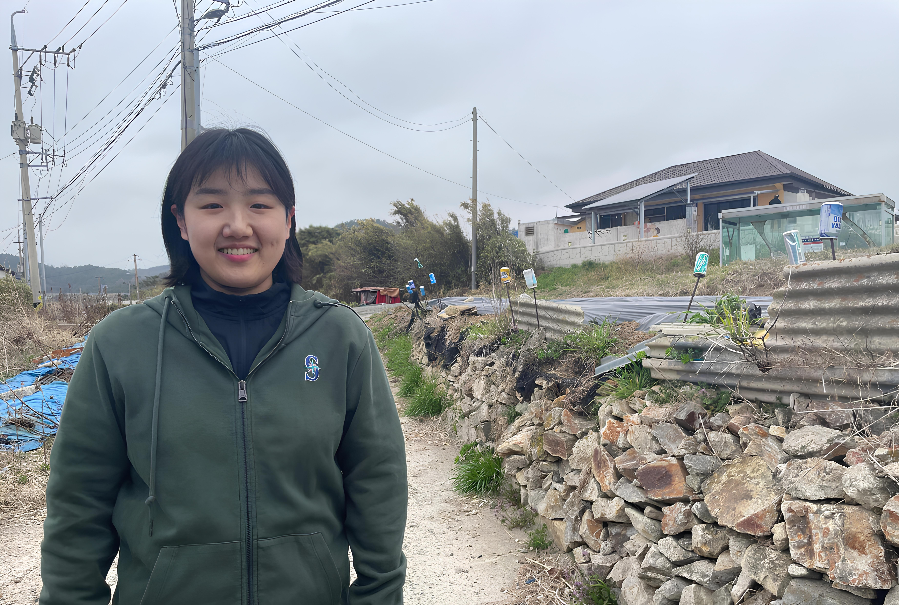

After

Before
@software{yolov8_2023,
author = {Jocher, Glenn and Chaurasia, Ayush and Qiu, Jing},
title = {YOLO by Ultralytics},
url = {https://github.com/ultralytics/ultralytics},
version = {8.0.0},
year = {2023}
}
@article{kirillov2023segany,
title={Segment Anything},
author={Kirillov, Alexander and Mintun, Eric and Ravi, Nikhila and Mao, Hanzi and Rolland, Chloe and Gustafson, Laura and Xiao, Tete and Whitehead, Spencer and Berg, Alexander C. and Lo, Wan-Yen and Doll{\'a}r, Piotr and Girshick, Ross},
journal={arXiv:2304.02643},
year={2023}
}
@misc{rombach2021highresolution,
title={High-Resolution Image Synthesis with Latent Diffusion Models},
author={Robin Rombach and Andreas Blattmann and Dominik Lorenz and Patrick Esser and Björn Ommer},
year={2021},
eprint={2112.10752},
archivePrefix={arXiv},
primaryClass={cs.CV}
}
@inproceedings{ruiz2023dreambooth,
title={Dreambooth: Fine tuning text-to-image diffusion models for subject-driven generation},
author={Ruiz, Nataniel and Li, Yuanzhen and Jampani, Varun and Pritch, Yael and Rubinstein, Michael and Aberman, Kfir},
booktitle={Proceedings of the IEEE/CVF Conference on Computer Vision and Pattern Recognition},
year={2023}
}